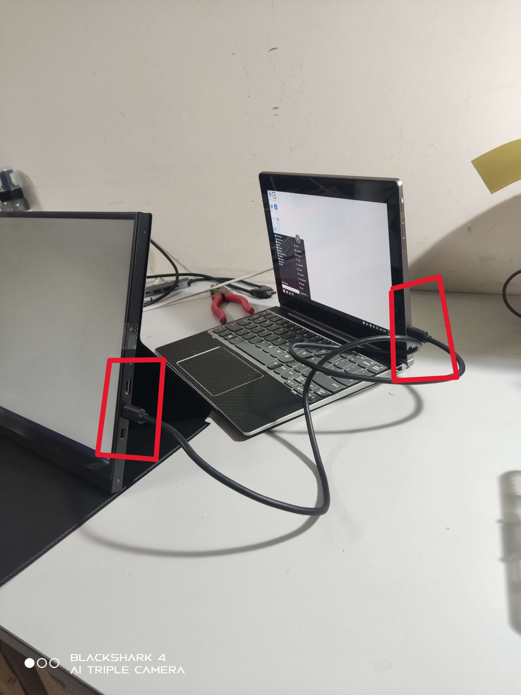
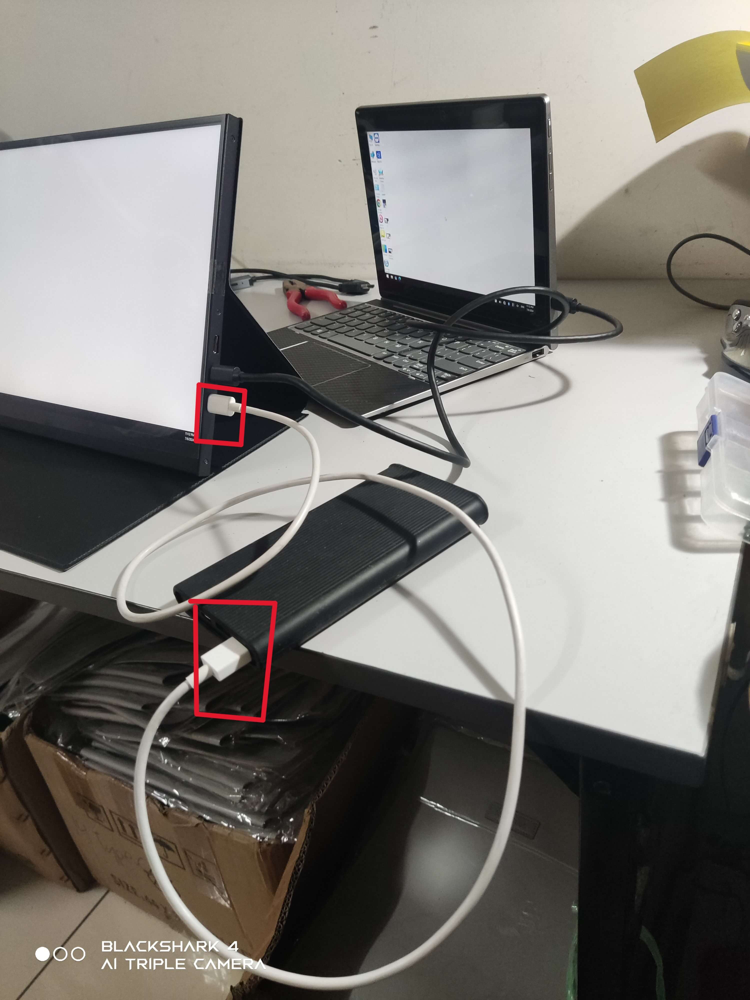
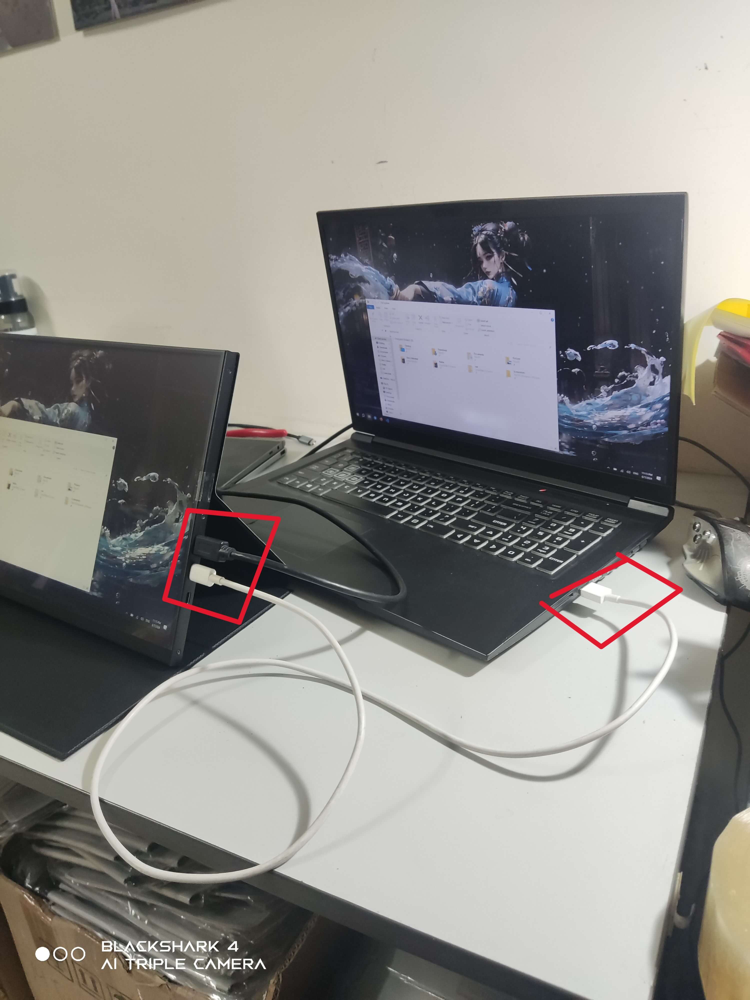
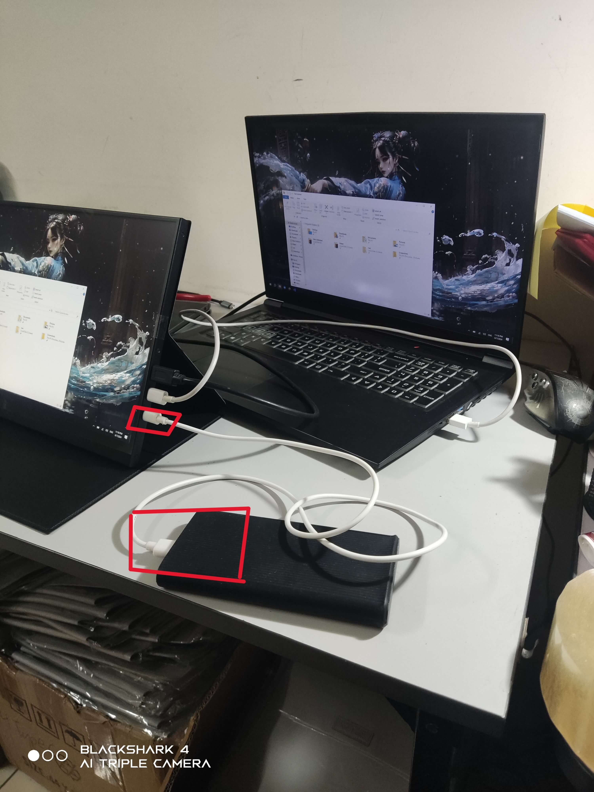

2 Method Connect To Touch Screen Monitor
Method A - USB-C To Monitor
1) Just Connect USB-C Cable From Monitor (Upside/Top/Above) USB-C Port To Your Device.
2) When Connect Using Method A To The Monitor,The Monitor Is Flicking or Cant Turn It On,Just Plug A Power USB-C Cable To The Monitor (Downside/Bottom/Below) USB-C Port
* The Power USB-C Cable Can From Adapater or Power Bank
Method B - HDMi To Monitor
1) Just Connect HDMi & USB-C Cable From Monitor (Upside/Top/Above) USB-A Port To Your Laptop.
2) When Connect Using Method B To The Monitor,The Monitor Is Flicking or Cant Turn It On,Just Plug A Power USB-C Cable To The Monitor (Downside/Bottom/Below) USB-C Port
* The Power USB-C Cable Can From Adapater or Power Bank